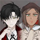
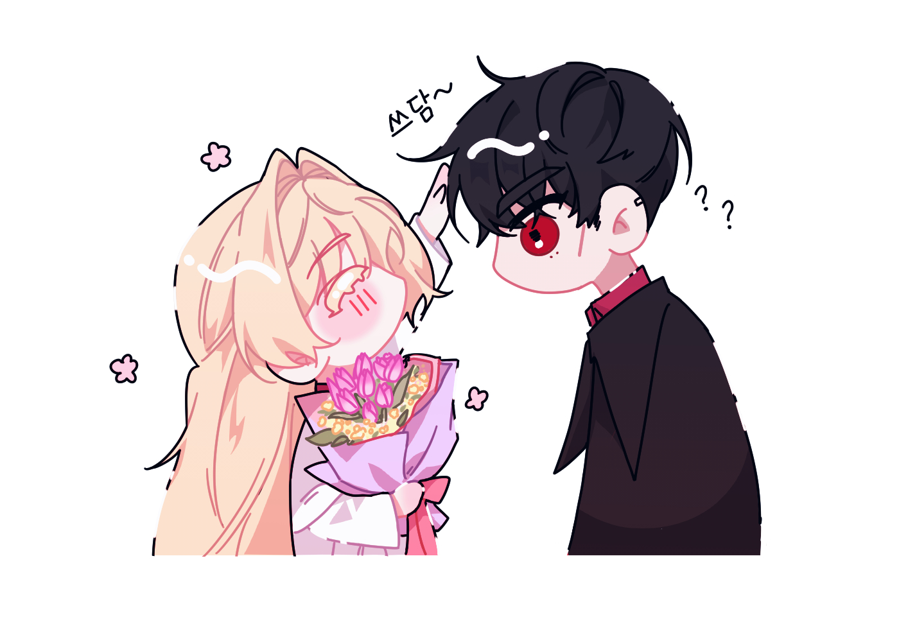

#1화 프롬파티 공표 후2022.09.30. 트윗게시일
평소와 똑같은 나날. 여러분은 교수님의 부름에 아카데미에 있는 넓은 메인 홀로 모였습니다.
단상에는 마법 학과장 교수가 서있고, 옆에는 비마법 학과장 교수가 걸어다니며 학생들의 수를 세고 있습니다. 무슨 일인지 수근거리는 학생들에게 알미나 로든펠드 교수가 주의를 줍니다.
"조용히. 마도구와 하나가 되고 싶지 않다면 조용히 하세요."
시몬 클라우드 교수는 자신의 발 밑에 작은 마법진을 띄웠습니다. 숨소리가 크게 울리는 것을 보니 목소리 증폭 마법을 건 모양입니다.
"왕립 아르카누스 아카데미의 두 번째 학기가 벌써 절반 정도 지나갔습니다. 3년 넘게 학교를 다닌 여러분에게는 이제 익숙한 일상일 테지요."
"그러나 평소와는 다른 점이 있습니다. 눈치가 빠른 학생이라면 아시겠습니다만."
"이번에 처음으로 저희 아카데미에서 졸업생이 나온다는 점입니다."
"여러분이 착실히 학교 생활을 하는 동안 아카데미를 향한 세간의 관심이 옅어져 있었으나…. 1기 졸업생이 나온다는 소식에 다시 많은 사람들이 이목을 집중하기 시작했습니다."
"왕정과 귀족은 물론, 평민과 가십거리를 찾는 신문사도 말입니다."
"하지만 바깥 상황이 어떻든 여러분은 학교 생활에 집중하는 게 좋겠습니다. 곧 기말 테스트가 있을 예정이니까요."
"테스트에서 좋은 성적을 받은 학생은 왕실에서 주목하게 된다는 건 더 말할 필요도 없겠습니다만…."
"왕실 마법사군이나 왕실 마탑 확자로 입단하는 학생에게는 특히나 더 좋은 메리트가 될 것이니 열심히 해주시길 바라겠습니다."
"…아, 이건 서론입니다. 훈화만 하기 위해 여러분을 부른 게 아니에요."
시몬 교수는 목을 가다듬고 재차 입을 엽니다.
"이런 복잡한 상황에 놓인 여러분을 위해 학교 측에서 작은 이벤트를 준비했습니다.
지금까지 노력한 여러분과 곧 졸업할 고등부 3학년을 위한 프롬 파티를 열 예정입니다. 자세한 사항은 추후 본관 로비의 알림판에 공지하겠습니다. "
교수님의 말이 끝나자 주위가 웅성거리기 시작합니다. 지금까지 학교 측에서 이런 축제를 마련해준 적은 한 번도 없었기 때문이죠!
할 말을 끝마친 교수님은 해산을 알리고 홀을 빠져나갑니다. 여러분도 이제 자유로이 행동해도 되겠어요.
 "어머, 아카데미에서 파티를 열어줄 거라곤 생각하지 못했네요~"
"어머, 아카데미에서 파티를 열어줄 거라곤 생각하지 못했네요~"
카렌은 손 끝으로 입을 가리며 고개를 기울였다.
 "어떤? 의미를 가지는지는 모르겠지만요."
"어떤? 의미를 가지는지는 모르겠지만요."
고개를 갸웃거리고 있던 카렌의 뒤로 지나가던 킬리칸이 다분히 목적이 있는 듯한 미소를 걸고 다가와 말을 건다.
 "졸업생들끼리 신나게 엉덩이 흔들면서 춤춰보라는 학교장의 뜻인가 보지 뭐. 백작영애도 참가신가~?"
"졸업생들끼리 신나게 엉덩이 흔들면서 춤춰보라는 학교장의 뜻인가 보지 뭐. 백작영애도 참가신가~?"
갑자기 나타난 킬리칸임에도 어느정도 그의 악명을 들어서 알고 있던 카렌은 평온한 얼굴로 차분히 고개를 끄덕이고 미소짓는다.
 "그런 의미라면 즐겁게 흔들어드릴 자신은 물론 있지만요~ 아카데미에서 열어주는 파티인데 참가해야지요? 리저브도 참가할게 아닌가요?"
"그런 의미라면 즐겁게 흔들어드릴 자신은 물론 있지만요~ 아카데미에서 열어주는 파티인데 참가해야지요? 리저브도 참가할게 아닌가요?"
 "물론 참가하겠지만 난 춤은 영 젬병이라서 그냥 구석에서 구경 좀 하겠지. 구경하다 손이 심심하면 장난질도 좀 하고... "
"물론 참가하겠지만 난 춤은 영 젬병이라서 그냥 구석에서 구경 좀 하겠지. 구경하다 손이 심심하면 장난질도 좀 하고... "
킬리칸은 작게 헛기침을 하곤 카렌의 얼굴을 슬쩍 흘겨보았다. 그런 킬리칸에게 카렌은 장난스레 말을 이었다.
 "춤은 말이에요, 음악이 이끄는대로 추는 거랍니다. 때론 도전해보는 것도 즐거울 거예요~ 춤에 반한 부자귀족이 구애할지도?"
"춤은 말이에요, 음악이 이끄는대로 추는 거랍니다. 때론 도전해보는 것도 즐거울 거예요~ 춤에 반한 부자귀족이 구애할지도?"
부자 귀족이 구애한다고? 킬리칸은 카렌의 말에 약간 헛웃음을 흘리며 고개를 내리저었다.
 "부자는 좋지만 귀족은 만날 생각 없어. 난 놀랍게도 내 분수를 조금은 알고 있거든."
"부자는 좋지만 귀족은 만날 생각 없어. 난 놀랍게도 내 분수를 조금은 알고 있거든."
 "으흠~ 분수,라는 말은 흥미롭네요? 저 같으면 마법사 배우자를 놓치지 못할 것 같은데~ 아, 혹시 춤을 춰 본 적이 없다면 제가 무료로 레슨해줄 수 있어요"
"으흠~ 분수,라는 말은 흥미롭네요? 저 같으면 마법사 배우자를 놓치지 못할 것 같은데~ 아, 혹시 춤을 춰 본 적이 없다면 제가 무료로 레슨해줄 수 있어요"
네 말을 가만히 듣던 킬리칸은 눈썹을 올리고 전혀 믿지 않는 듯한 표정을 짓는다.
 "세상 모든 귀족 메리골드처럼 생각하진 않잖아? 이 망토를 걸치고 다닌 후부턴"
"세상 모든 귀족 메리골드처럼 생각하진 않잖아? 이 망토를 걸치고 다닌 후부턴"
킬리칸은 자신이 걸치고 있는 아카데미 망토를 펄럭거렸다. 망토에 새겨진 왕립 아르카누스의 표식은 조명에 반사되어 고급스러운 금빛을 발산했다.
 "그나마 겉으로는 대우해주지만 속에 숨긴 혐오감까지 숨길 순 없는 법이지. 상관은 없어. 나도 귀족이랑 깊은 관계를 맺을 생각 없으니까. 앞서 말했듯 춤 출 생각도 없고."
"그나마 겉으로는 대우해주지만 속에 숨긴 혐오감까지 숨길 순 없는 법이지. 상관은 없어. 나도 귀족이랑 깊은 관계를 맺을 생각 없으니까. 앞서 말했듯 춤 출 생각도 없고."
말의 내용만 들으면 전혀 신경쓰지않는다는 듯한 말이었으나 표정은 그와 달리 와락 구겨진다. 킬리칸은 귀족에 대해 좋지않은 경험을 떠올렸는지 작게 한숨을 내쉬었으나, 고객 앞에서 표정을 구길 순 없는 법. 다시 널 바라볼 때는 씩 웃음을 지은 채였다.
 "흠~ 유감이네요. 혹시 나중에 원한다면 찾아와요~ 금전거래가 확실히 오가는 믿을만한 정기 거래자 정도는 되어 줄 테니."
"흠~ 유감이네요. 혹시 나중에 원한다면 찾아와요~ 금전거래가 확실히 오가는 믿을만한 정기 거래자 정도는 되어 줄 테니."
카렌은 킬리칸의 구겨진 얼굴을 잠시간 응시했다가 눈이 마주치자 금세 씩 웃는 모습을 보고 따라서 콧잔등을 찡긋이듯 웃어 보인다. 웃는 카렌을 킬리칸이 잠깐 바라보다가 이내 시선을 돌리곤 아무래도 상관없다는 듯 말한다.
 "...뭐 어쨌든."
"...뭐 어쨌든."
허황된 일에 대해선 그다지 관심이 없는 킬리칸이었기에 어깨를 한 번 으쓱거리곤 곧바로 화제를 전환했다.
 "그나저나 아리따운 백작 영애의 파트너는 누구야? 상대가 없으면 내가 끝내주는 파트너를 찾아줄까? 물론 공짜는 아니고 소개비 받을 거지만."
"그나저나 아리따운 백작 영애의 파트너는 누구야? 상대가 없으면 내가 끝내주는 파트너를 찾아줄까? 물론 공짜는 아니고 소개비 받을 거지만."
 "아직 찾지 못했지만... 리저브는 믿어도 괜찮은 사람이 맞나요~? 소개비는 별 것 아니라지만, 끝내주는 파트너... 이 부분이 미심쩍군요~?"
"아직 찾지 못했지만... 리저브는 믿어도 괜찮은 사람이 맞나요~? 소개비는 별 것 아니라지만, 끝내주는 파트너... 이 부분이 미심쩍군요~?"
소개비가 별 것 아니라는 말에 메리골드 가문의 재산을 어림짐작해본다. 세상물정 모르는 귀족 아가씨는 킬리칸에게 좋은 거래대상이었다. 잘만 하면 돈벌이는 걱정없겠는 걸 생각하며 의심을 표하는 네 눈빛을 흘러 넘기고 능청스레 대답한다.
 "물론 믿어도 되지."
"물론 믿어도 되지."
많이 청구해도 되겠군 생각하며 흡족한 미소를 얼굴에 올린다.
 "끝내주는 파트너는 무려 오스본 신이 점지해주는 대단한 사람으로 구해올 거라고! 바로 이.... "
"끝내주는 파트너는 무려 오스본 신이 점지해주는 대단한 사람으로 구해올 거라고! 바로 이.... "
킬리칸은 말을 질질 끌며 갑자기 제 망토를 뒤적거리더니 원형의 나무판을 꺼내서 보여준다.
 "돌려 돌려 돌림판을 통해서!"
"돌려 돌려 돌림판을 통해서!"
자랑스럽게 내놓았지만 사실상 허접하게 만들어진 수제 원형 돌림판이었다. 학생들 이름 또한 하나하나 적혀 있었지만 삐뚤빼뚤한 글씨로 적혀있었기에 보통 사람들은 알아보기 여간 힘들 것이다.
 "운명이 정해준 사람이 누군지 나오면 내가 당장 출동해서 콱 뒷덜미를 잡고 끌고 와 대령을 해줄게. 잘 되고 말고는 메리골드의 매력에 달려있겠지만 뭐..."
"운명이 정해준 사람이 누군지 나오면 내가 당장 출동해서 콱 뒷덜미를 잡고 끌고 와 대령을 해줄게. 잘 되고 말고는 메리골드의 매력에 달려있겠지만 뭐..."
잠깐 말을 멈춘 킬리칸은 다시금 카렌을 쳐다보았다. 그러곤 웬지 모를 능글맞은 미소를 얼굴에 올리곤 진담인지 농담인지 구분이 안 갈 법한 말을 내뱉는다.
 "네 미모라면 끌고 온 후 일사천리 아니겠어?"
"네 미모라면 끌고 온 후 일사천리 아니겠어?"
카렌은 신 얘기를 꺼내는 킬리칸을 의문어린 낯으로 바라보다 이어지는 행동을 가만 지켜본다. 허름한 돌림판이 나왔을땐 부드러운 표정이 삐끗 무너질 뻔했지만... 귀족가 영애답게 능숙하게 다시 표정을 정돈한다.
 "후후, 무얼 믿어야하는지 조금도 알 수 없군요~ 칭찬을 고맙지만, 억지로 대령된 분들이 제게 좋은 감정을 가질지... 그전에, 이 돌림판의 이름은 리저브가 전부 직접 적은건가요?"
"후후, 무얼 믿어야하는지 조금도 알 수 없군요~ 칭찬을 고맙지만, 억지로 대령된 분들이 제게 좋은 감정을 가질지... 그전에, 이 돌림판의 이름은 리저브가 전부 직접 적은건가요?"
 "맞아. 다 내가 조각칼로 적었어. 자, 봐. 여기 네 이름도 있지?"
"맞아. 다 내가 조각칼로 적었어. 자, 봐. 여기 네 이름도 있지?"
삐뚤삐뚤하게 '카랜 매리골드'라고 허접하게 쓰여있는 글자를 손가락으로 가리킨다. 몇개는 철자도 틀렸지만 킬리칸은 전혀 모르는 눈치다. 어쨌든 킬리칸은 당당하다. 카렌이 말꼬리를 흘리는 것을 보고 외모에 자신감이 없다고 생각한 것인지 카렌을 격려한다.
 "자신감을 가져, 메리골드 영애. 나한테 억지로 끌려오면 물론 기분 더럽겠지만 널 소개시켜주면 바로 기분 좋아질테니까~"
"자신감을 가져, 메리골드 영애. 나한테 억지로 끌려오면 물론 기분 더럽겠지만 널 소개시켜주면 바로 기분 좋아질테니까~"
 "후후, 그런 립서비스는 싫어하지 않아요. 그보다도 정말 열심히네요~"
"후후, 그런 립서비스는 싫어하지 않아요. 그보다도 정말 열심히네요~"
하지만 열심히 하는 것과 잘한다는 것은 별개의 문제... 노력에 비해 재능이 대단해 보이지 않는다는 말은 삼켜내었다.
 "리저브의 노력을 봐서 한 번 해볼게요. 제 마음에 들지 않는 사람이 나오면 굳이 데려오지는 않아도 괜찮구요~ 금액은 빌로 지불하면 되나요?"
"리저브의 노력을 봐서 한 번 해볼게요. 제 마음에 들지 않는 사람이 나오면 굳이 데려오지는 않아도 괜찮구요~ 금액은 빌로 지불하면 되나요?"
고객 하나 영업에 성공하여 돈을 벌 기회가 생기자 킬리칸의 얼굴이 환하게 밝아진다. 심지어 정기 거래자라니. 메리골드 백작가문의 아가씨에게 꽤 뜯어낼 수 있을 것 같다는 기대감에 신이 난 듯한 얼굴이다. 킬리칸은 금세 아첨꾼의 표정을 짓고 대답한다.
 "역시 메리골드는 배포가 큰 사람이네."
"역시 메리골드는 배포가 큰 사람이네."
만족스럽다는 표정으로 박수를 두어번 짝짝 친다. 그런 킬리칸의 능구렁이같은 모습을 보곤 카렌이 희미하게 미소지었다.
 "가진 귀족으로서 있는 돈을 아끼면 안 되죠~ 배포가 커야 큰 사람이 될 수 있답니다? "
"가진 귀족으로서 있는 돈을 아끼면 안 되죠~ 배포가 커야 큰 사람이 될 수 있답니다? "
카렌은 가방에서 작은 주머니를 꺼내어 코인 한 개를 추가해 넣은 후 그대로 킬리칸에게 건넨다.
 "직접 가지고 다니는건 얼마 되지 않아서... 적어도 오만 빌 정도는 있을 거라고 생각해요? "
"직접 가지고 다니는건 얼마 되지 않아서... 적어도 오만 빌 정도는 있을 거라고 생각해요? "
 "크~~ 아주 훌륭한 마음가짐이야 메리골드. 암암, 있는 사람일수록 배포가 크게 팍팍!! 써야 시장경제가 원활하게 돌아가지. 나 같은 사람도 좋고 말야! 좋아, 그럼 돌린다?"
"크~~ 아주 훌륭한 마음가짐이야 메리골드. 암암, 있는 사람일수록 배포가 크게 팍팍!! 써야 시장경제가 원활하게 돌아가지. 나 같은 사람도 좋고 말야! 좋아, 그럼 돌린다?"
신난 얼굴로 돌림판을 꺼내 첫 장사 개시를 해본다. 과연 뭐가 나올지... 데굴데굴 굴러가는 돌림판을 바라보고 있던 카렌보다 더 흥미진진하게 바라본다. 천천히 돌림판의 속도가 늦어지고 결국 걸린 이름은.. 펜테리온 가문의 셀린 펜테리온이었다
킬리칸과 함께 돌림판이 빙글빙글 돌아가던 걸 보던 카렌은 이내 돌림판이 멈추고 나온 이름에 작게 웃음을 걸었다.
 "셀린 펜테리온? 오~~ "
"셀린 펜테리온? 오~~ "
과장된 리액션으로 환호를 해준다. 셀린 펜테리온, 분명 킬리칸과도 몇 번 말을 섞어본 적 있는 도련님이었다. 두 사람이 몇 번 정원에서 티파티를 가지고 있는 모습도 본 적 있었다. 지나가면서 선남선녀끼리 잘 논다(?)라고 생각했었지, 이 커플 찬성한다는 의미로 고개를 끄덕거린다.
 "어때. 마음에 드는 상대야? 끌고 와?"
"어때. 마음에 드는 상대야? 끌고 와?"
 "후후, 펜테리온인가요~ 그 단정한 사람이 끌려온다면 어떤 반응일지 궁금하긴 하지만... 막무가내로 끌고 오면 안되죠~ 그리고 제게 넘어오지 않을 것 같은 분이네요! 리저브덕분에 재밌었어요~ "
"후후, 펜테리온인가요~ 그 단정한 사람이 끌려온다면 어떤 반응일지 궁금하긴 하지만... 막무가내로 끌고 오면 안되죠~ 그리고 제게 넘어오지 않을 것 같은 분이네요! 리저브덕분에 재밌었어요~ "
당장이라도 끌고 올 기세로 돈주머니를 망토 안에 넣는데 펜테리온을 데리고 오지 않아도 된다는 말에 다소 당황한다
 "으응? 하지만 돈을 받았는데 계약한 사항이 다 이행되지 않는 거잖아. 아~~ 나 이런 거 되게 찝찝한데. 빚지는 느낌이라고. 그 남작이 너한테 넘어오지 않는다는 건.. "
"으응? 하지만 돈을 받았는데 계약한 사항이 다 이행되지 않는 거잖아. 아~~ 나 이런 거 되게 찝찝한데. 빚지는 느낌이라고. 그 남작이 너한테 넘어오지 않는다는 건.. "
지나가다 티파티를 하는 모습으로 봤을 때 분명히 서로간에 좋은 관계라고 생각했는데 아니었던건가? 킬리칸은 둘의 관계에 대해 호기심이 일었으나 물어도 될지 모르겠어서 눈만 가늘게 뜨고 카렌을 바라본다. 킬리칸은 아카데미 내부에서 '사기꾼이다' '등쳐먹는다' 라는 악명은 높았으나 여자에게 사기를 친 적은 없었다. 굉장히 불편한 마음이 들어 한숨을 작게 쉰다.
 "으흠~? 굳이 빚을 지울 생각은 없었는데 말이에요? 돈은 원하는 만큼의 무언가를 누리기 위해 사용하는 것이니, 제가 음식을 남겼다 생각해도 되는 것을요. 그 눈은 뭔가요~? "
"으흠~? 굳이 빚을 지울 생각은 없었는데 말이에요? 돈은 원하는 만큼의 무언가를 누리기 위해 사용하는 것이니, 제가 음식을 남겼다 생각해도 되는 것을요. 그 눈은 뭔가요~? "
카렌은 킬리칸을 따라하듯 눈을 가느스름 뜨다 무언가 깨닫고 말을 하려 했지만 그 전에 킬리칸이 먼저 입을 열었다.
 "잠깐 있어봐 그럼."
"잠깐 있어봐 그럼."
붙잡을 새도 없이 킬리칸은 어디론가 사라졌다. 순식간에 사라지는 킬리칸으로 인해 카렌은 멍한 낯을 하고 자리를 떠야할까- 고민하던 찰나, 저 멀리서 튤립과 안개꽃으로 장식된 커다란 꽃다발을 든 킬리칸이 저벅저벅 다가왔다. 전에 카렌에게 보여줬던 그 꽃다발이었다.
 "이거 아직도 안 팔렸거든. 그렇다고 하자 있는 물건은 아니고, 너한테 팔려고 한 후로 다른 애들한테 안 보여주고 그냥 가지고만 있었어서 안 팔린 거야. 물론 아직도 싱싱해. 펜테리온 남작을 끌고 오지 못한 대신 이거 줄게."
"이거 아직도 안 팔렸거든. 그렇다고 하자 있는 물건은 아니고, 너한테 팔려고 한 후로 다른 애들한테 안 보여주고 그냥 가지고만 있었어서 안 팔린 거야. 물론 아직도 싱싱해. 펜테리온 남작을 끌고 오지 못한 대신 이거 줄게."
혹시라도 오해할까 봐 말을 덧붙인 뒤 커다란 꽃다발을 카렌의 품에 안겨준다. 생각한 대로 굉장히 잘 어울려서 킬리칸은 저도 모르게 입가에 미소를 지었다.
 "어머~ 아직도 가지고 있었던 건가요? 끌고오지 말아달라 부탁한건 저인데도요. 팔려던 꽃다발을 그냥 받아도 될지 모르겠지만, 무척 마음에 들어요~ 고마워요? "
"어머~ 아직도 가지고 있었던 건가요? 끌고오지 말아달라 부탁한건 저인데도요. 팔려던 꽃다발을 그냥 받아도 될지 모르겠지만, 무척 마음에 들어요~ 고마워요? "

카렌은 꽃다발을 품에 안아들곤 장난스레 씩 웃더니 킬리칸의 머리 위로 손을 뻗는다. 그리고는 꾹꾹 힘을 주어 칭찬하듯 쓰다듬었다.
 "그리고 그와는 꽤 오래 친근하게 지냈지만 서로 그런 마음을 가지지 않았기 때문에 넘어오지 않을 거라고 했답니다~ 특별한 이유는 없어요."
"그리고 그와는 꽤 오래 친근하게 지냈지만 서로 그런 마음을 가지지 않았기 때문에 넘어오지 않을 거라고 했답니다~ 특별한 이유는 없어요."
카렌은 어쩐지 오해받은 기분에 떨떠름히 변명을 늘어놓았다.
꽃다발을 받은 카렌을 계속 보고 있던 킬리칸은 갑자기 불현듯 머리가 쓰다듬어지자 눈을 동그랗게 뜨고 놀라더니 머쓱한지 얼굴이 살짝 붉어진다
 "뭐야, 그냥 친구였어? 난 또.... 아 그리고 꽃다발은 기브 앤 테이크라니까? 고맙다고 인사받을 만한 일도 아닌데... 머리 망가져 그만해."
"뭐야, 그냥 친구였어? 난 또.... 아 그리고 꽃다발은 기브 앤 테이크라니까? 고맙다고 인사받을 만한 일도 아닌데... 머리 망가져 그만해."
절로 툴툴거리는 말을 하며 꿍얼댔지만 피하진 않고 있었다. 카렌은 그 모습을 보며 더욱 진하게 미소를 담은 채 머리를 쓰다듬었다.
 "자주 함께 있었는데 보지 못하신 모양이군요? 그리고 엘리트와 비엘리트도 어울린답니다~그리고 기브 앤 테이크라도 인사는 확실해야 하는 법이에요. 설마 리저브... 부끄러움을 타는 건가요~? "
"자주 함께 있었는데 보지 못하신 모양이군요? 그리고 엘리트와 비엘리트도 어울린답니다~그리고 기브 앤 테이크라도 인사는 확실해야 하는 법이에요. 설마 리저브... 부끄러움을 타는 건가요~? "
즐거운 웃음과 함께 네 머리를 한 차례 정리하듯 빗어주고 떨어졌다. 카렌의 손이 완전히 자신의 머리에서 떨어지자 괜히 닿았던 부분을 만지작거렸다. 만져진 머리카락에서 희미하게 꽃향기가 남았다.
 "마음에 들면 나중에.. 또 꽃이 생기면 가져올게."
"마음에 들면 나중에.. 또 꽃이 생기면 가져올게."
말을 끝내곤 입을 다물었는데 다시 생각해보니... 오해의 소지가 있어 급하게 말을 덧붙인다
 " 물론 판다는 뜻이야! 내가 그냥 줄 리가 없지. 암암, 그럼~"
" 물론 판다는 뜻이야! 내가 그냥 줄 리가 없지. 암암, 그럼~"
멋쩍은 듯 말을 잇는 네 모습에 카렌이 부드럽게 웃으며 대답했다.
 "좋아요~ 꽃다발을 잘 간직하구, 다음 꽃은 직접 사줄게요~"
"좋아요~ 꽃다발을 잘 간직하구, 다음 꽃은 직접 사줄게요~"
다시금 카렌이 품에 안은 꽃을 포옥 껴안으며 얼굴에 웃음을 올리자 킬리칸은 약간 묘한 얼굴로 카렌을 바라보았다. 카렌이 그런 킬리칸에게 질문을 올리려는 찰나, 먼저 시선을 피한 킬리칸이 헛기침을 했다.
 " ... 크흠, 나 좀 일이 생겨서 먼저 가봐야겠다. 실례."
" ... 크흠, 나 좀 일이 생겨서 먼저 가봐야겠다. 실례."
어색하게 인사를 하고 카렌의 대답을 기다리지도 않은 채 황급히 몸을 돌렸다. 카렌이 잡을 새도 없이 긴 다리로 순식간에 멀어졌다.
 "음? 그렇게 급하게 일이 생겼나요?"
"음? 그렇게 급하게 일이 생겼나요?"
네가 황급히 자리를 떠버리면 덩그러니 남겨져 꽃다발의 꽃내음만 맡았다. 무슨 일일까... 밀려오는 궁금증에 따라갈까 시선을 들었지만 너는 이미 시야에서 사라졌겠다.
 "다음에 묻죠, 뭐~"
"다음에 묻죠, 뭐~"